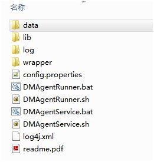

达梦数据库代理（以下简称dmagent）是DM部署工具和DM Web版管理工具DEM部署在远程主机上的代理。通过dmagent可以监控远程主机的相关信息，也可以在远程主机部署MPP、RW、DW,DMDSC等集群系统。
dmagent存在3种运行模式：1:DEM Agent 2:Deploy Agent 3:DEM&Deploy Agent。不同模式对应不同的功能。运行模式1，dmagent作为DEM Agent将负责远程主机的信息收集工作。运行模式2，dmagent作为Deploy Agent将负责在远程主机进行数据库节点搭建的工作。运行模式3，dmagent将同时开启运行模式1和运行模式2。
dmagent目录结构：

dmagent目录在安装目录下的tool/dmagent。
data目录:用于存放DEM Agent模式代理产生的临时数据。
lib目录:存放dmagent运行所需要的jar包。
log目录：保存dmagent生成的日志文件。
wrapper目录：dmagent生成系统服务依赖文件。
log4j.xml：日志配置文件。
readme.pdf：dmagent使用说明文档。
config.properties：dmagent配置文件。配置信息如下：
#[General]
#1:DEM Agent 2:Deploy Agent 3:DEM&Deploy Agent
#设置dmagent的运行模式
run_mode=3
#dmagent的RMI端口号
rmi_port=6364#[DEM]
#DEM Agent运行模式所需参数
#DEM系统所在主机连接信息
center.url=http://192.168.0.104:8080/dem
center.agent_servlet=dem/dma_agent
(以下内容以windows平台为例，Linux平台请运行同名的sh脚本)
DMAgentRunner.bat：dmagent命令行模式运行脚本。用户如果以命令行模式运行dmagent，请直接运行DMAgentRunner.bat。
DMAgentService.bat：dmagent服务模式运行脚本。dmagent默认服务名为DMAgentService。DMAgentService.bat支持功能如下：
#服务方式启动dmagent
#windows下需先注册服务，才能启动。
#linux下虽然可直接启动，但是并非通过服务启动dmagent。如果需要通过服务启动dmagent，请先注册服务。
DMAgentService.bat start#停止dmagent服务
DMAgentService.batstop#重启dmagent服务
DMAgentService.batrestart#注册dmagent服务
#默认服务为自动启动
DMAgentService.batinstall#删除dmagent服务
DMAgentService.batremove#查看dmagent服务运行状态
DMAgentService.batstatus
在远程主机使用dmagent，需首先手动将dmagent拷贝到远程主机。然后通过DMAgentService(服务方式)或DMAgentRunner(命令行模式)运行dmagent。在Linux下建议以非root用户运行dmagent。
注意：dmagent未自带JRE运行时环境，所以运行dmagent需要用户设置JRE_HOME的环境变量。Windows请在系统属性中设置环境变量。 Linux下在系统配置文件/etc/profile中设置JRE_HOME环境变量。